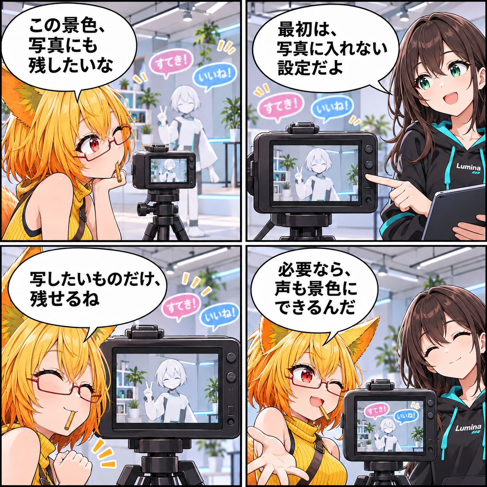

2026.11.15 / Development Log / Feature Spotlight
閑話休題：コメントは、最初はカメラに映さない
新規実装の報告ではなく、VRASに既にあるVRライブコメントと、撮影に残す表示を選べる仕組みを紹介します。にぎやかな空間も、作品だけを切り取りたい瞬間も、どちらも大切にするための機能です。
今回は feature-spotlight（機能紹介） です。集計期間は2026-11-14 03:00:00 JSTから2026-11-15 02:59:59 JSTまで、対象はViewerの
main です。集計終了時点のHEADは c33733a41be121b814a1732df8c9eae089ace2ea、期間内コミットは0件でした。Assets/Scenes/MainScene.unity の未コミット差分は、期間内に実装された事実を確定できないため実績には含めていません。
コメントと、撮影したい景色
VRASには、VR空間でYouTube Liveやニコニコ生放送のコメントを、吹き出しや履歴として表示する既存機能があります。ライブの空気を感じられる一方で、撮影したいのはアバターや背景だけ、という場面もあります。
最初は、写真に入れない
初期状態では、ライブコメントは撮影用Cameraに映りません。空間にはコメントを表示しつつ、撮影では作品そのものをすっきり切り取れる設計です。
必要なときだけ、表示範囲を選ぶ
コメントを撮影に入れるかどうかは設定で切り替えられます。配信の空気を一緒に残したいときと、作品だけを残したいときで、表示範囲を選べます。
外部サービスとの接続について
YouTube Liveやニコニコ生放送との連携は、利用者が接続操作を行う場合にだけ使われます。YouTube連携の初回利用には明示的な同意が必要で、同意はあとから撤回できます。通常のローカルでのアバター表示や撮影に、外部サービスへの接続は必要ありません。
今回の紹介範囲
これは現行実装の紹介です。当日に新しく実装・検証完了したことを示すものではありません。
4コマの話
ろひは撮影前に、空間を流れる応援の吹き出しとカメラの枠を見比べます。ルミナが「最初は写真に入れない」ことを伝えると、ろひは写したい景色をすっきり選べることに気づきます。最後は、必要ならコメントも含められると知って、表現の選択肢として受け取ります。
まとめ
VRASのVRライブコメントは、VR空間へコメントを表示できる既存機能です。初期状態では撮影用Cameraにコメントを映さず、設定で必要なときだけ撮影へ含められます。